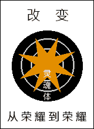
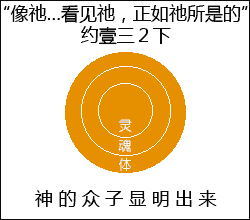

帖前5:23 且愿和平的神，亲自全然圣别你们，又愿你们的灵、与魂、与身子得蒙保守，在我们主耶稣基督来临的时候，得以完全，无可指摘。
西1:13 祂拯救了我们脱离黑暗的权势，把我们迁入祂爱子的国里。
三一神是非受造、永远的生命
第一图的圆圈表征永远的生命。神圣的生命是三一神，这生命是自有、永远、非受造、和无限的生命，无始无终。

人是受造而堕落的生命
第二图表明三一神创造了一个人。神创造人，因为神渴望借着人彰显祂自己。这人乃是首先的亚当（林前十五45上），就是受造、有限的生命，有始有终。这生命受造时，是美好、纯洁且无罪的。神所创造的人，作为盛装神的器皿，有三部分─灵、魂、体（帖前五23）。灵是里面的部分，盛装并接触是灵的神，而体是外面的外表，接触物质的世界。在里面的灵和外面的体之间，有魂作为媒介，就是人的个格。这三部分的人没有罪。

第三图的每一部分都成了黑暗的；这是堕落的亚当。人受造是盛装神的器皿，但在神进入人里面以前，别的东西进来了。那就是神的仇敌撒但，人位化的罪。

首先的亚当是头一个人，因着堕落而成为败坏的。第二个人是末后的亚当，就是基督（林前十五45下）。基督是怎样的人？基督是神人，是真人，却是神成为肉体。这神人钉在十字架上成为担罪者。在基督钉十字架以后，祂复活了，而在复活里，祂活到永永远远。在复活里，祂凭着神圣的性情使祂整个属人的性情变化形像；生命在祂里面，这生命一点不差就是基督自己。约壹五章十一节说，“这见证就是神赐给我们永远的生命，这生命也是在祂儿子里面。”这儿子就是成为肉体、钉十字架、并复活的神人，祂乃是我们的生命（西三4）。
借着十字架的迁移
第四图这里有两个范围，一面是亚当的范围，另一面是基督的范围。在亚当的范围里没有别的，只有罪与死，而在基督的范围里有永远的生命。在这两个范围之间是十字架。人若在十字架的左边，他就在罪与死的范围里；人若经过了十字架，他就在生命的范围里。

在我们人的灵里得了重生
第五图表明我们在我们人的灵里得了重生。当我们接受主耶稣作我们救主的时候，祂作为那灵就进入我们灵里，并将生命赐给我们。约壹五章十二节说，“人有了神的儿子，就有生命；没有神的儿子，就没有生命。”赞美主，我们若有神的儿子，就有生命，因为神的儿子就是生命！然而，在重生的时候，我们只接受生命到很小的程度。我们只在我们这人有限的部分接受神圣的生命。

从黑暗被变化到荣耀里
我们得重生以后，需要从黑暗被变化到荣耀里（第六图）。为此，我们需要给神圣的生命通畅的路，在我们全人里面扩展。神圣的生命越扩展，我们就越被变化，从荣耀到荣耀（林后三18）。

有时候，我们借着体验在我们身体里面神圣的生命，就胜过我们肉身的软弱，如在罗马八章十一节所说的。然后主回来时，我们的整个身体要改变形状，从旧造变化成为新造，成为荣耀的身体，那时候我们就要像祂（第七图）。我们要与成为肉体、钉十字架、并复活的基督毕像毕肖（约壹三1~2）。我们这人的每一部分─灵、魂、体─要被神圣的生命充满、浸透、弥漫，并与神圣的生命调和。这将是神众子的显明、显示出来（罗八19）。我们要在灵、魂、体里全然、完全像主基督。这是何等奇妙！

愿那灵给我们深刻的印象，叫我们知道我们在那里，我们是什么，以及我们需要什么 （《生命经历的基本原则》二〇〇至二〇七页）。
参读：《生命经历的基本原则》第十七章；《异象的高峰与基督身体的实际》第一至二篇。